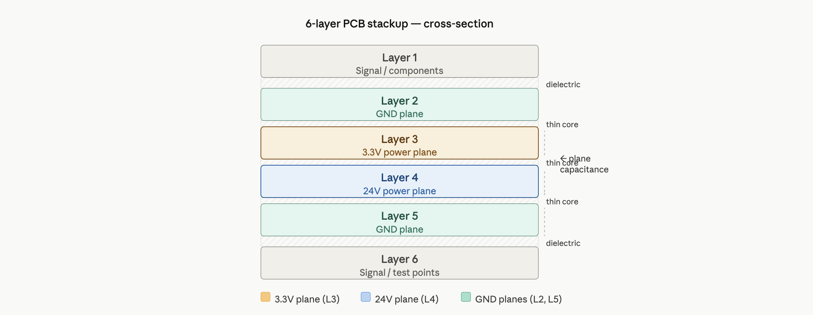
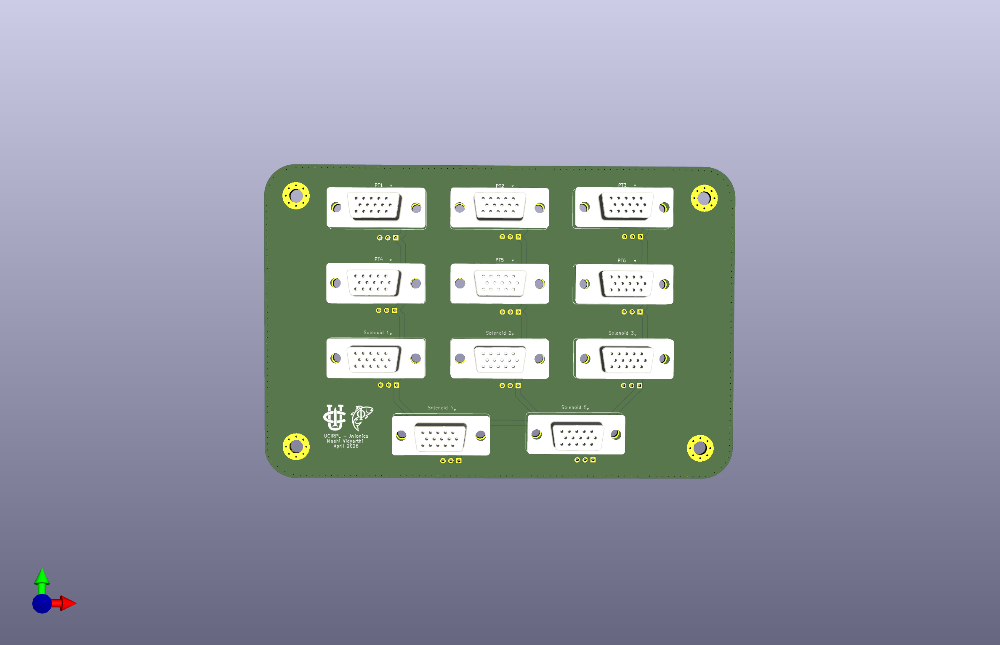
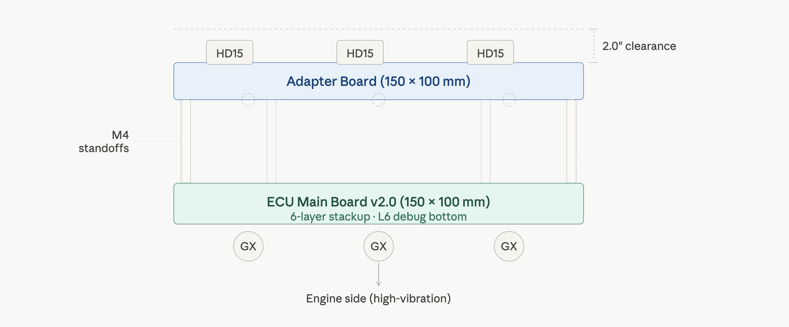

Hardware Interface
Electrical Design & 6-Layer Stackup

Figure 11: 6-Layer internal routing and power distribution stackup.| Layer | Type | Function |
|---|---|---|
| L1 | Signal/GND | Component landing and logic routing. |
| L2 | Ground | Solid internal Faraday cage for EMI shielding. |
| L3 | 3.3V/Signal | Stabilized logic power plane. |
| L4 | 24V/Signal | High-current propulsion power plane. |
| L5 | Ground | Lower shielding plane for EM isolation. |
| L6 | Signal/GND | Bottom-side debug access and telemetry routing. |
Design : The proximity of L3 (3.3V) and L4 (24V) to solid GND planes (L2, L5) creates high inter-planar capacitance. This acts as a distributed capacitor bank, preventing logic brownouts during high-current valve actuation.
Connectors & Interconnect Board
The system architecture uses a vertical stack to balance high-density I/O with mechanical reliability.

Figure 12: 3D Render of the ECU Adapter Board.
Figure 13: Diagram of the ECU Adapter Board stacking over the main ECU.Transition Strategy: GX to HD15 (DSUB)
- Main ECU Interface: Uses GX-series circular connectors for high-vibration engine-side connections.
- Adapter Board: Stacks via standoffs to convert GX footprints to HD15 (D-Sub) for high-density signal distribution to the avionics tray.
- Legacy Reference: See Legacy GX Wiring Documentation for v1.0 compatibility.
Mechanical Constraints
| Feature | Dimension | Notes |
|---|---|---|
| Board Size | 150mm x 100mm | Matches ECU v2.0 footprint. |
| Mounting | 4x M3 Holes | Standardized standoff pattern for vertical stacking. |
| Max Stack Height | 2.0" | Combined height of ECU + Standoffs + Adapter Board. |
JTAG & Debugging Guide
To maintain accessibility after the adapter board is populated, all primary debugging interfaces are on the bottom layer (L6).
JTAG (J5) Pinout
Standard ARM 10-pin (2x5) 1.27mm pitch Cortex Debug connector.
| Pin | Signal | Pin | Signal |
|---|---|---|---|
| 1 | 3.3V (VREF) | 2 | SWDIO |
| 3 | GND | 4 | SWCLK |
| 5 | GND | 6 | SWO |
| 7 | KEY | 8 | NC |
| 9 | GND | 10 | nRESET |
Test Points — by rail
Key signals accessible for probing on the L6 layer:
3.3V domain (L3)
TP26 — 3.3V_MAIN: Primary MCU logic rail. Test first for any MCU brownout or resetTP21 — 3.3V_REDS: Recovery system logic rail. Independently regulated — if TP26 is healthy but TP21 is low, fault is in the REDS regulator, not the main supply.
24V domain (L4)
TP23 — MAIN+: Positive terminal of the 24V propulsion bus. Monitor here during valve open/close to observe back-EMF transients.TP24 — GND: Ground reference for 24V measurements. Always use this, not chassis ground, to avoid ground loop error on the ADC.
ADC-buffered power sense (read-back, not raw rail)
GSE_VSNS: Buffered ADC input — GSE supply voltage. Confirms pre-launch power state.BATT_VSNS: Buffered ADC input — battery voltage. Compare against TP23 to check for diode/fuse drop on the 24V path.